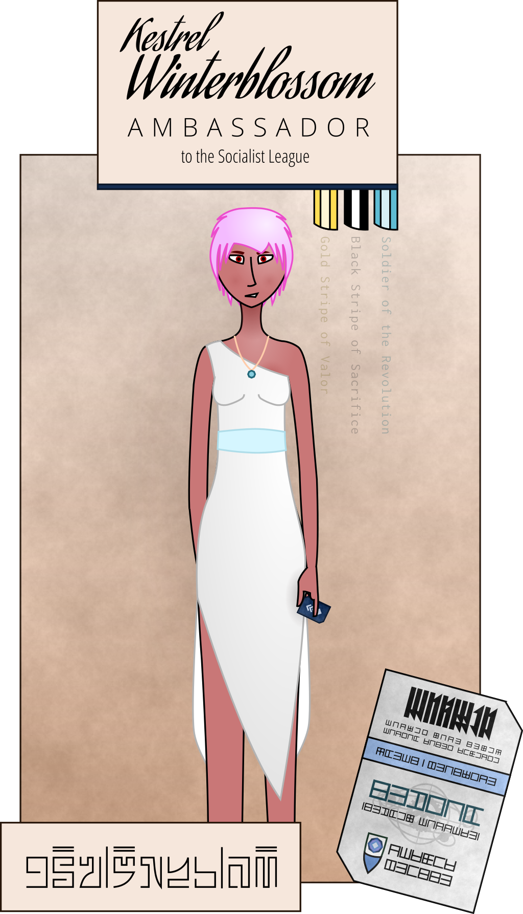

The warm equatorial wind massages my face as I step out of the plane. I take a deep breath of the fresh air, squinting in the light of the noon sun. The heat feels good after the clammy cold of the flight from Destiny Garden, and I roll back my sleeves as I gaze around. There’s green everywhere I look, moss and vines crawling up the low, blocky concrete of the Embassy buildings, with trees soaring from green balconies on each level, giving the impression of an ancient jungle temple lost to the ages.
It would be criminal, I reflect, to build buildings so short in Republic territory. Anything less than thirty stories would be a shameful waste of space in our densely-packed cities. Or on most den tsuang worlds, for that matter. Here, though, the buildings are sparse, woven between gardens and watercourses.
Is the whole Society like this? I wonder.
A flicker of movement in the corner of my eye catches my attention, and I turn to find two sleek black APCs pulling up on either side of the plane, their guns swivelling to face us. If they were going to kill us, they’d just have shot us down, I tell myself, swallowing hard, marveling at how quiet the huge vehicles are.
Doors hiss open and soldiers clamber out, taking up position around us. I step forward slowly, holding my hands in the air.
“We’re unarmed,” I call, unable to keep my voice from shaking. It’s too easy to imagine Imperial Guard uniforms on the soldiers—
I tear my thoughts from that track, breathing deeply, trying not to hyperventilate, focus on the differences like that Khmai elder had taught me. Rifles that looked more like the ones the League sent us in the war, black and green armor, not red and gold, covered arms, no capes, no swords—
A woman in body armor, only her eyes visible between her black mesh face-mask and her helmet, steps forward, holstering her rifle. “Are you Kestrel-ambassador?” she asks, her voice firm but oddly gentle. She’s shorter than me, I realize. They all are. Even Thrush, the shortest of my staffers, is taller than all of them.
I can’t help but stare into her eyes. Her bright green eyes, set into pale, tan skin. She’s like a vision from a war-vid come to life.
“Ah. Yes, ma’am,” I manage, breaking my gaze. “Ambassador Kestrel Winterblossom, ma’am.”
She motions to one of her soldiers. “Uastasha sidim; uascela rucsorim.”
The soldier holsters her weapon as well and steps forward. “I’m going to pat you down quickly, alright?” she asks.
“I—” I swallow, and nod. “Yes, ma’am.”
She’s brisk and businesslike about it, but thorough. The cold metal and mesh of her gauntlets makes me shiver through my thin tunic. She nods, and steps back.
“You can lower your hands. Entry card, please.”
I drop my hands slowly, relief flooding my mind, and fish the card out of my pocket. She takes it, inserts it in a handheld device. There’s a chirp, and a screen lights up.
A computer? That small?
She looks up, takes me by the chin. I flinch at the cold, unexpected touch; she seems surprised at my reaction, and immediately loosens her grip. She examines my face carefully, turning my head this way and that, then nods, and hands me my card back.
“Var mase, roshlas. Ac niltash.”
“Ac rustad vali, rantash.” The officer steps forward, and pulls down her face mask, revealing dimpled cheeks and thin, dark lips. “Comrade Ambassador. Welcome to the Embassy. I am Ranvar-roshla— Commander Ranvar Sigtami of Embassy Security.” She puts a hand on my shoulder, and after a moment’s confusion, I realize it’s a gesture of greeting. I reciprocate, and she nods.
“Th-thank you. It’s a pleasure to meet you, Comma— comrade Commander.” I glance around at the assembled troops. “It’s quite the welcoming party you’ve assembled for us.”
“We take security very seriously, comrade.” She points to indicate my staff, clambering down the stairs. “Please have your people line up alongside the plane, hands at their sides, holding their entry cards. Once everyone’s been cleared, we’ll get you on your way.”
“…alright.” I turn and look at my staffers, my gaze lingering on Piper, who’s shaking at the sight of guns pointed, if not at us, then at least at the ground near us. “Please be gentle with them, though. They’re very anxious.”
The commander inclines her head. “My people are professionals, Kestrel-ambassador. As long as yours follow our instructions, they have nothing to fear.”
I smile at the odd rendition of my title. “Alright. Um. Just so you know, there’s an honor guard on the plane. I ordered them to stay put, I didn’t want them here, but they are armed. Just so we’re all on the same page.”
Commander Sigtami… or is it Commander Ranvar? immediately barks an order in Ranuir. Two soldiers take up position by the debarkation stairs, rifles at the ready. She raises a handset to her face, exchanges a few terse words with the operator, then holds it up to me.
“Please order your pilot to raise the stairway.”
“Okay. Um. Captain, can you hear me?”
“Affirmative, ma’am.”
“Please raise the stairway. We’re all disembarked. Uh, over,” I add, the rules of voice procedure slowly coming back to me.
“Wilco, ma’am, over.”
“Thanks. Winterblossom out.” I look back to the commander, who hooks the handset back on her belt.
“Thank you for your cooperation,” she says. “Now, please prepare your people.”
“Yes, ma’am.” I clear my throat, and walk back across the tarmac. Bear smiles as I approach.
“Are we all good here?”`
“Almost.” I raise my voice. “Alright, people, the Greens just need to make sure we’re all who we say we are.” I step up to Piper, put a hand on her shoulder. “Everyone, please form a line starting here. Have your cards out and keep your hands out of your pockets. They’re just going to pat you down really quickly, and then we’ll be off to the Embassy, alright?”
“They— they’re going to pat us down?” Piper looks at me fearfully. “Is something— are we in trouble?”
I force a smile. “They’re just very paranoid. They’re not going to hurt you.”
Piper squeezes her wrist nervously. “I — I don’t like this.”
I reach down and gently pry her hands apart, placing them at her sides. “I’ll be right here, okay? They’ve already patted me down, I promise it’s nothing bad.”
Piper looks me in the eyes. She’s the youngest on the team, I remind myself; she was just a kid during the war. “Okay,” she murmurs. “I trust you.”
“Hey, that means a lot to me.” I smile at her and wave to the Society soldiers. They approach, one taking me by the arm and guiding me a ways back from my staff. Piper’s eyes are fixed on me as they pat her down. Bear looks more annoyed than anything; in all the years I’ve known him, I’ve only seen him properly scared once, bless the man, and that was back during the—
Too many memories today. I wrench my thoughts away again, trying to focus on the Society troops as they handle my people, and keep watch for any sign of impropriety. None comes; they’re all as quick and professional as the soldier who searched me, and the whole process takes less than a minute. Piper’s shoulders sag with relief as the soldier releases her and steps away, and I hurry back over to her.
“You doing okay, Piper?”
She looks at me and closes her eyes, exhaling. “I’m okay. Thank you, ma’am.”
I pat her on the shoulder. “You did good. I’m proud of you.”
The commander barks an order into her handset, and approaches me. “We’re bringing in a transport to pick your people up. We’ll escort you back to the Embassy.”
I nod, relief flooding my body. “Everything’s in order then?”
“Everything is in order, comrade.” Ranvar inclines her head. “Now, as you are about to enter a Society facility, I am required to warn you that you and your personnel are expected to promptly obey all verbal instructions given to you by Society citizens. Failure to do so may result in restraint, detention, or the vacation of your diplomatic credentials.”
“I understand, ma’am.”
Ranvar fixes me with an appraising gaze. “You’re not quite like I expected, comrade Ambassador.”
I give an awkward laugh. “How’s that?”
“From what we were told about your revolution, we expected you all to be… well.” She smiles at me and pats me on the shoulder. “More difficult to handle.”
I blink. “More difficult… what exactly do you mean, ma’am?”
“Well, you foreign socialists are all a bit rowdy, aren’t you, comrade? But for uastashar you’re showing impressive discipline.”
My stuttering is interrupted by the sound of tires grinding on gravel. I turn to see two small vehicles pulling up next to us. They’re neither armed nor armored, but the colors and lines look just like the APCs, and their engines are just as silent. Are all their vehicles made by the same people? I wonder, glancing between them in surprise. Even the Guard never showed this much consistency.
I nod at Bear and he takes my meaning immediately, heading for the other transport to keep our people calm. The soldiers usher us aboard, a few of them boarding themselves. I flinch as one places her armored hands on my back and abdomen to guide me into the vehicle. I sit gingerly on a seat; to my surprise, it’s soft and comfortable, supporting my back almost like a crash-couch would. Ranvar shows me how to strap the seatbelt across my chest and thighs, and takes a seat next to the driver. The doors slide shut and seal with a faint hiss.
Piper, sitting next to me, fiddling with her hands in her lap, turns to look at me for support. I give her a gentle smile, and reach out.
“Hey, you. Hold my hand.”
Piper flushes deeply and and looks down, embarassed, but as I keep my hand out, she gingerly reaches out and takes it. She flashes me a grateful smile as I squeeze tight.
“It’s gonna be okay.”
“I know, ma’am.” Piper nods quickly. “I just… yeah. Sorry, ma’am.”
“I know, Piper.” I smile back. “It’s okay. Believe me, I know.”
Our transport begins moving again. It’s eerie how silent the cabin is. I rode in all sorts of things back in the day, from captured tanks to beat-up trucks to zuen-drawn carriages, and not a one of them was this quiet. Or this smooth. If it wasn’t for the windows, you’d barely know we were moving at all.
Outside, I can see the APCs following us, matching our speed perfectly.
I try to focus on the absence of machine-gun fire.
